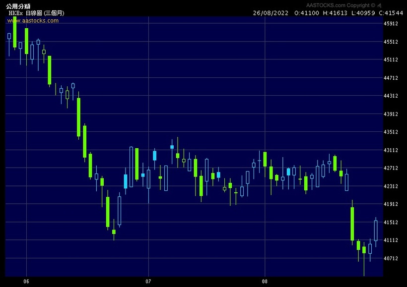
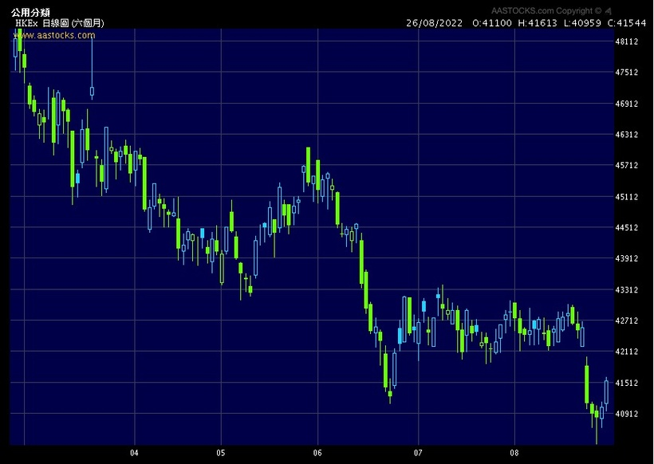
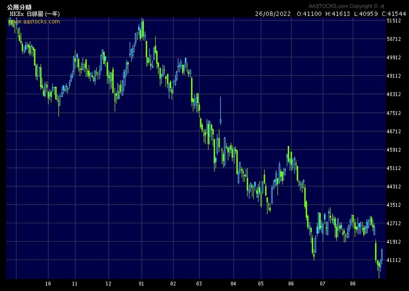
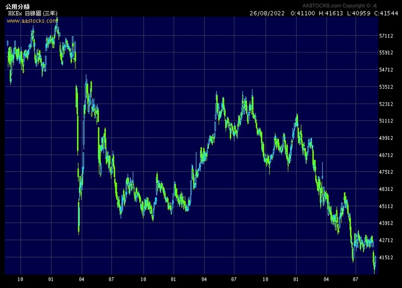
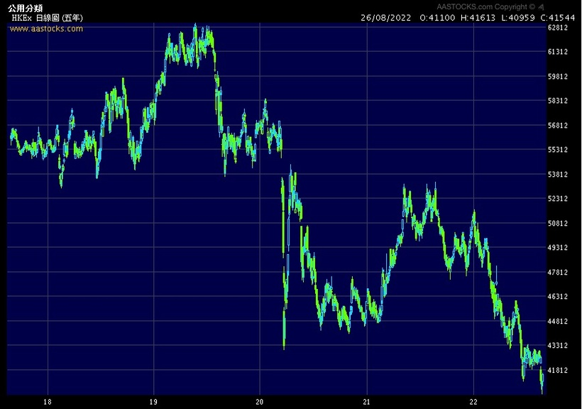
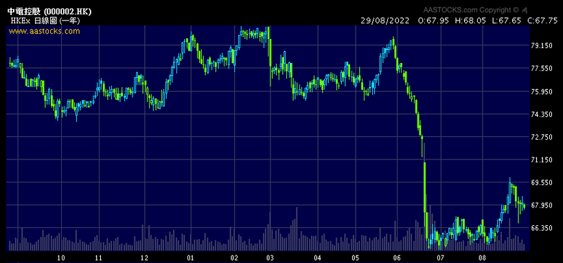
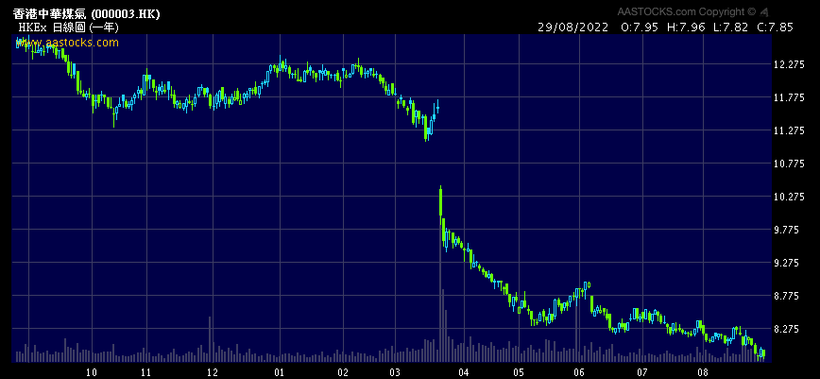
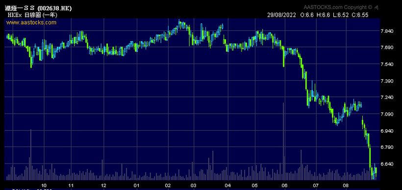

小弟近兩星期忙搬屋，請見諒，這兩天會追數寫好文給各位。關於搬屋，租了個性價比極高的好地方，找機會再寫文分享。
這次專欄想update一下對本地收息股的看法。
自2017年開始寫專欄，已經極之超級無敵討厭本地收息股。奈何坊間卻有大量KOL / 財演向股民瘋狂推介收息股，最慘的是，毫無投資知識的初哥股民卻非常受落，可惜最後虧損連連。
極多財演仍在「教」大家收息，例如甚麼中電、煤氣、港燈、港鐵、電能、領展等等，並千篇一律地指「優質、龍頭、壟斷、有前景、穩健、具增長潛力」云云，最有趣的是，供足三五年，仍是虧損，post like數卻有數百（不要在對號入座，這種KOL一地也是）。
我們做量化的，不可吹水，要看數字。一起來看看恒生公用股指數，當中的成分股便是香港高息公用股，權重按市值。

圖一為近3個月表現，下跌7%；

圖二為近6個月表現，下跌12%；

圖三為近1年表現，下跌20%；

圖四為近3年表現，下跌32%；

圖五為近5年表現，下跌27%。
是否被單一股份大跌影響？非也，中電5年也是輸，煤氣5年也是輸，電能5年也是輸，港鐵5年也是輸，港燈5年也是輸，領展5年也是輸。
是否震驚？財演不是常說收息股穩健嗎？不是說大企業穩健嗎？不是說公用股穩健嗎？
通通都是bullshit！
那為什麼會這樣？
首先，必須知道收息是假的，派5厘息完全不是代表你會多5厘，派息是會除淨（ex-dividend）的，即你的總資產在派息前後並不會變。100元股票派5元息給你，但股價會立即下跌5元至95元，因此你總資產沒有變過（$95+5=$100）。
我以為這是大家也會知的事情，奈何身邊10個人有5個都不知道，我完全無法接受這事實。
但那也不代表買公用股5年會輸3成，到底是甚麼原因？
以往專欄也有不斷提過：
1. 公司夠大，收益很穩定不代表股價會上升。你知道的，所有大戶都知，整個市場都知，甚至知得比你多，因此價格已經price in了種種你數出來的優點，例如甚麼甚麼「優質、龍頭、壟斷、有前景、穩健、具增長潛力」等等。再用這些因素來買入/月供絕對是on9。
2. 大戶炒賣絕不會跟你看甚麼收益率、派息率、現金流。幾十億幾百億的buy side看的都是這些基本面以外的因子及數據（請參考上幾篇專欄提及的領先指標）。繼續天天看上年的年報只是嚴重浪費時間，緣木求魚。
3. 香港通漲並不是政府聲稱的那2-3%，而是過去15年暴升的樓價。現時美國通漲已經8-10%，仍覺得收3-5厘息很高興很滿足的，不要再投資了，回去找小學數學老師讀加減數吧。
對不起，激動是因為仍有大量人走來跟我說他滿手公用股及高息股，說他虧損嚴重，很慘，怎算好，然後轉頭繼續找高息股試圖收息。被人騙了5年還不清醒的… 也許真的叫不醒一個裝睡的人。
高息、高通漲環境下，被動投資將會變得很差，要跑贏CPI，你必須改變自己錯誤的認知，增加正確的投資知識，再努力地主動尋找alpha。
如果你見到身邊仍有人以為收息股很穩健，可讓他們達致財務自由的，請幫幫他們，以減少金融市場中的受害者，救得一個得一個。
附上幾隻公用股圖表：


